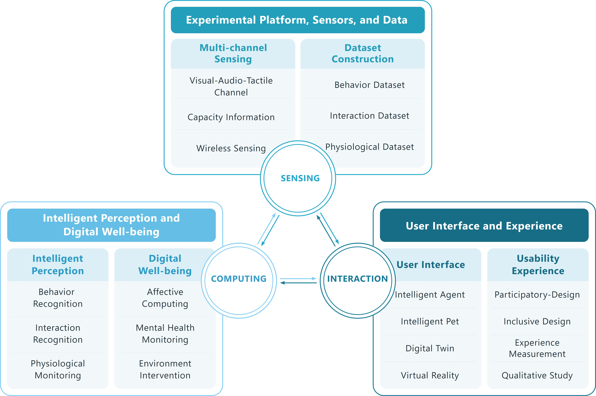
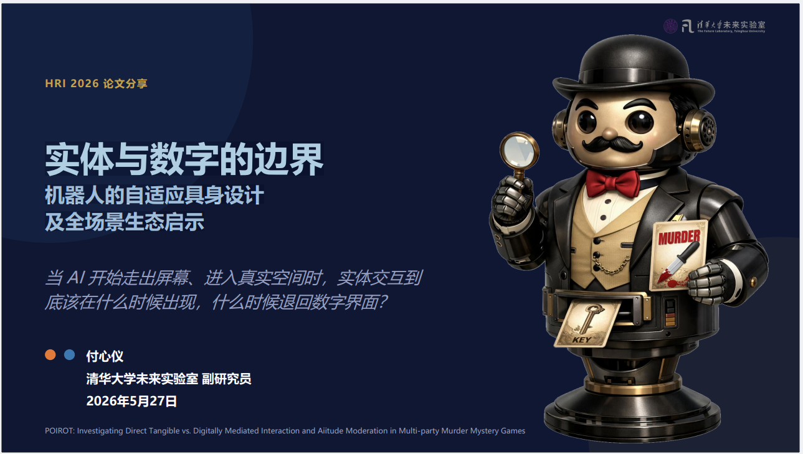

Associate Professor, The Future Laboratory, Tsinghua University
I am an Associate Professor at The Future Laboratory, Tsinghua University. I received my Ph.D. in Design from the Academy of Arts & Design, Tsinghua University in 2018, and my Bachelor's degree from the Department of Computer Science and Technology, Tsinghua University in 2012.
My research focuses on multimodal sensing, computing, and interaction in living spaces. My work emphasizes the sensing and modeling of human behavior and psychology through multi-modal sensing to construct human-centric intelligent systems. Through this work, I aim to enhance the efficiency and quality of human-machine collaboration and deepen the machine's understanding of human cognition.
Research
My research spans several key domains:
Sensing: Smart Home Experimental Platform, Sensors, and Dataset
Reasoning: Human Activity Recognition (HAR) and Affective Computing
Interaction: UX, VR/AR, HRI
Application: Digital Cultural Heritage

Publications
Loading publications...
Projects
Xiaomi Light and Color Coordination Project, 2026.3-2027.5, PI
Research on Rapid Identification and Coordinated Response Mechanisms for Psychological Abnormalities among Older Adults in Community-Based Elderly Care Systems, 2025.9-2027.12, PI
Key Technologies for Low-Privacy Proactive Identity Recognition Based on Large Language Models, 2025.8-2026.7, PI
2025 Beijing-Hong Kong-Macao University Exchange Program: Interdisciplinary Frontier Exploration and Collaborative Exchange Project, 2025.5-2026.5
2024 Mainland-Hong Kong-Macao Higher Education Student and Faculty Exchange Program ("Ten Thousand Talents Program"), 2024.1-2024.12
Long-Term Elderly Behavior and Mental Health Monitoring with Abnormality Early Warning Based on Multimodal Sensing Fusion, 2025.1-2026.12, PI
Top-Level Interaction Experience Design for Xiaomi Smart Home Systems, 2024.11-2026.12, PI
Data-Driven Intelligent Scenario Monitoring, 2024.5-2025.4, PI
Field Evaluation of Acoustic and Radio Frequency Wireless Sensing Technologies, 2024.3-2025.3, PI
Research on Digital Science Communication and Exhibition of Cultural Heritage Based on Virtual Reality, 2023.10-2026.10, PI
Research on New Models of Innovation and Social Development in the Era of Emerging Artificial Intelligence, 2023.10-2024.9, PI
Research on High-Quality Development Pathways for the Science Fiction Industry Based on 5G+AR/VR Technologies, 2022.7-2022.10, PI
Research on the Construction and Design of Smart Spaces for Future Personalized Living Environments, 2021.4-2023.3, PI
Interaction Design Research for Virtual Reality Shopping, 2019.6-2021.6, PI
Invited Talk

The boundary between entities and numbers:the adaptive embodied design of robots and insights for a comprehensive ecosystem
Academic Seminar on Embodied Intelligence @Beijing 2026.05
Services
Organizing Committee
CHI 2027
Interactive Demo Chair
ICHEC 2025
LBW Chair
IEEE ISMAR 2025
Publicity Chair
Chinese CHI 2024
Paper Chair
CHI 2025
Sustainability Chair
SIGGRAPH Asia 2024
Emerging Technologies Committee Member
Chinese CHI 2024
Paper Chair
Chinese CHI 2022
Publicity Chair
China Graph 2022
Electronic Theater Organizing Committee Member
Professional Service
2025-present
Executive Committee Member of CCF Technical Committee on Pervasive Computing
2024-present
Senior Member of China Computer Federation (CCF)
2024-present
Senior Member of China Society of Image and Graphics (CSIG)
2024-present
Secretary of Collaborative Innovation Alliance for Forensic Science and Technology
2024-present
Board Member of International Chinese Association of Computer Human Interaction (ICACHI)
2023-2026
Young Researcher of Beijing Association for Science and Technology Decision Advisory Expert Team on Interdisciplinary Research and Design Innovation
2021-present
Executive Committee Member of CCF Technical Committee on Human-Computer Interaction
2021-present
Committee Member of CSIG Technical Committee on Affective Computing and Understanding
Editorial & Review
Conference Review
CHI 2026 AC; DIS 26; HRI 26; CHI 2025 LBW AC; CHI PLAY 25; DIS 2024; UbiComp 2024
Journal Review
IEEE Transactions on Affective Computing; Scientific Reports; IEEE Transactions on Computational Social Systems; Frontiers of Information Technology & Electronic Engineering; Computers & Graphics; Heritage Science; Imaging Science Journal; She Ji; Sciences of Conservation and Archaeology